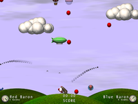

Flugsimulatoren
Zum Verständnis dieses Artikels sind folgende Seiten hilfreich:
Airstrike¶

Airstrike  ist ein 2D "Flugzeugshooter" mit hohem Fun-Faktor.
ist ein 2D "Flugzeugshooter" mit hohem Fun-Faktor.
Benötigtes Paket:
airstrike (universe)
 mit apturl
mit apturl
Paketliste zum Kopieren:
sudo apt-get install airstrike
sudo aptitude install airstrike
FlightGear¶
FlightGear ist ein realistischer und grafisch hochwertiger Flugsimulator, der mit enorm vielen zusätzlichen Flugzeugen und Szenerien erweitert werden kann. Auf der Homepage finden sich ausführliche Bedienungshinweise und viele Erweiterungen. Neben einer riesigen Auswahl von Flugzeugen kann auf der Projektseite fast jede Region der Erde heruntergeladen werden und einem Rundflug mit einem UFO durch Paris steht nichts mehr im Wege ...
Benötigtes Paket:
flightgear (universe)
mit apturl
Paketliste zum Kopieren:
sudo apt-get install flightgear
sudo aptitude install flightgear
Das Spiel wird mit fgfs gestartet. Der Flugzeugtyp kann beim Starten in der Kommandozeile angegeben werden. Ein Beispiel:
fgfs --aircraft=f16
Die Option --show-aircraft zeigt alle verfügbaren Flugzeuge.
Mehr dazu findet sich auch im Wiki ...
GL-117¶
GL-117 ist ein 3D-»Action«-Flug-Simulator, mit 20 Missionen, verschiedenen Flugzeugen, einem Zufallsgenerator für Landschaften, Blitzeffekte, Klänge, Musik und Joystick-Unterstützung.
Benötigte Pakete:
gl-117 (universe)
gl-117-data (universe)
mit apturl
Paketliste zum Kopieren:
sudo apt-get install gl-117 gl-117-data
sudo aptitude install gl-117 gl-117-data
- Erstellt mit Inyoka
-
 2004 – 2017 ubuntuusers.de • Einige Rechte vorbehalten
2004 – 2017 ubuntuusers.de • Einige Rechte vorbehalten
Lizenz • Kontakt • Datenschutz • Impressum • Serverstatus -
Serverhousing gespendet von